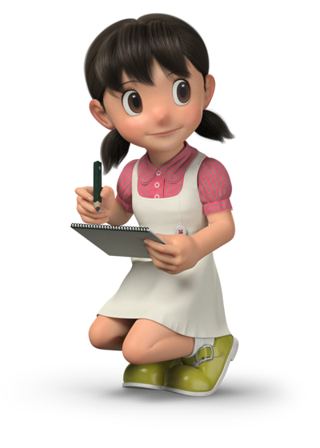
- Name: Shizuka Minamoto
- Age: 10
- Birht Date: May 8, 1961
- Height: 140 cm
- Skin Colour: Fair
- Eye Colour: Black
- Favorite Colour: Pink
- Parents: Yoshio Minamoto, Michiko Minamoto
Shizuka Minamoto, also known by her nickname Sue in
the
American and UK versions, is the tritagonist in the series, being the main female
character. In the future after marrying Nobita, she is also known as Shizuka
Nobi or
Mrs. Nobi.
Shizuka's signature color is pink, and she is usually represented by it.
Appearance
Shizuka has more realistic black hair with the bangs at the right side and dark brown oval-shaped eyes. She wears a white overall dress with a dark pink top underneath and yellow buckle shoes. In the sequel, the colors of the overall dress and top are swapped.
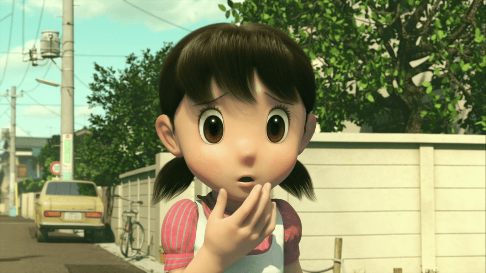
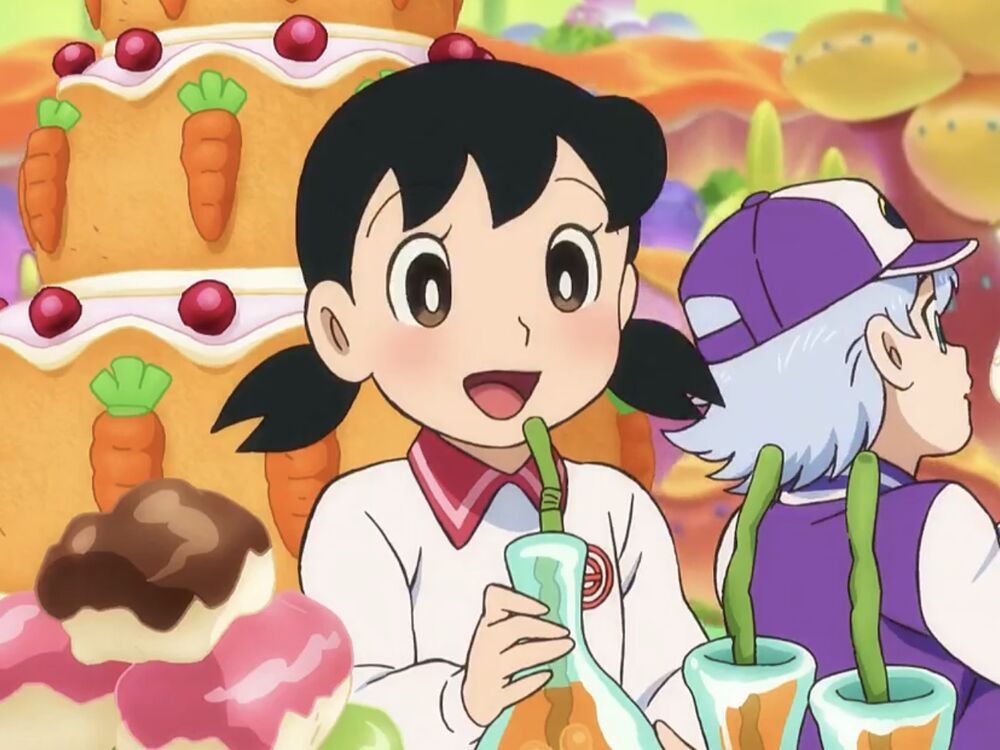
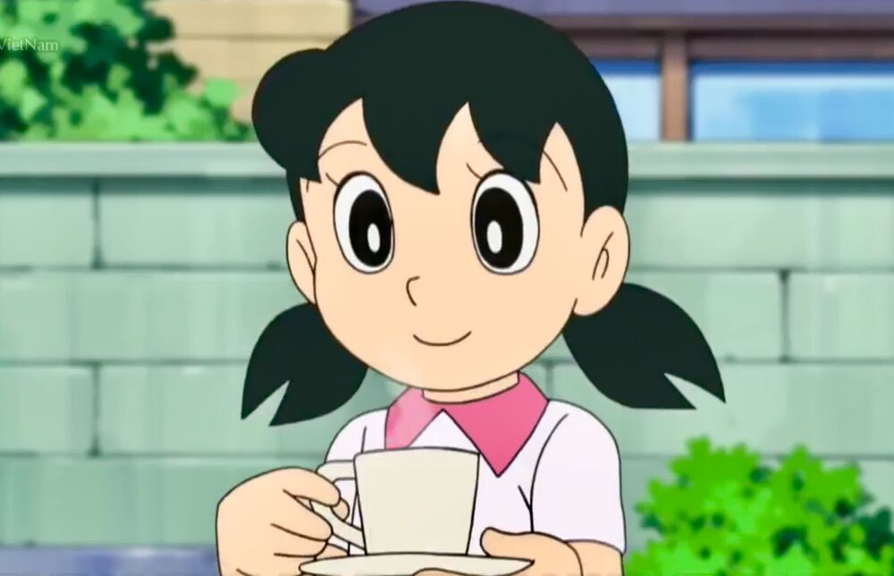
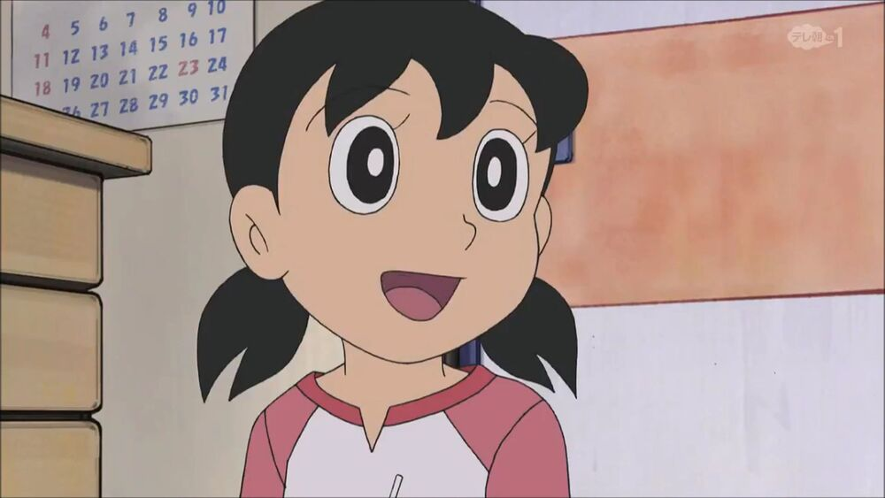
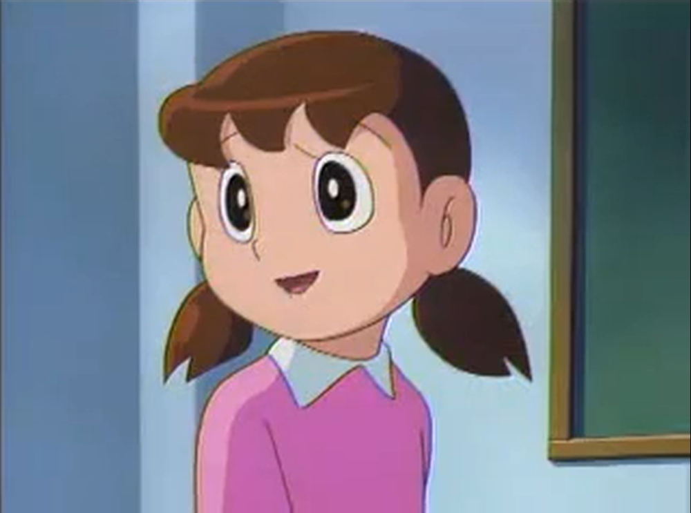
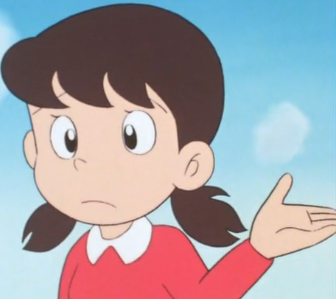
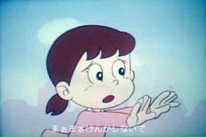
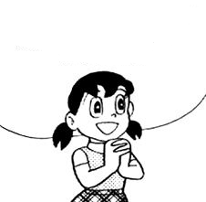
Personality and Characteristics
Shizuka is a smart and kind neighbourhood girl. She is, unlike Nobita, a quick-witted and very studious child. Shizuka loves to bathe and does it several times a day passionately. Unlike Nobita, Suneo, and Gian, she is not a fan of video games.
She cares for weaker people, abused animals, and neglected dolls. She wishes to be a nurse or an air-hostess when she grows up. Both jobs reflect her kind nature. Shizuka loves her dolls a lot, to the extent that she loves them more than her own friends. She once freed a little bird from a bundle of strings it got caught in. She also cares deeply for the Grandfather Tree. When she was unable to save the Grandfather Tree, she was devastated but later felt relieved when she saw a little sprout from the Grandfather Tree stump. In one episode, Doraemon, Nobita, and Shizuka put her dolls in Nobita's race cars and started racing. Nobita's car crashed and the doll fell out, and she began to cry and get angry at him. But when she sees Nobita doing the right thing or a good thing for others, it would be enough to make her genuinely forgive Nobita.
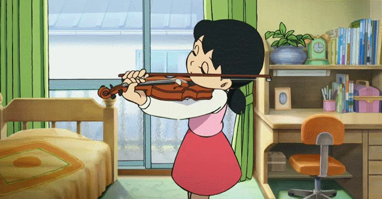
She is also known for sometimes taking piano lessons, which she dislikes because she likes the violin better. Her true passions are sweet potatoes and, again, the violin, in which her playing is as atrocious as Gian's singing. Like Gian, she is also tone deaf to this horrendous violin playing. Sometimes, Shizuka's practicing disturbs the neighbors, which is why Mrs. Minamoto would get mad at her.
Shizuka has a split personality, which is mostly shown in the 1973 anime and very early episodes of the 1979 anime. There are scenes that show her sleeping and eating at the same time, stealing her mother's lipstick for her to play with, swallowing an opal (To be fair, if we're going by the 2005 anime, she was too distracted by the TV to notice her mother had left it in her peanut bowl. We don't know why she swallowed it in the first place in the 1979 anime.), and slipping over a banana peel. Also, in the episode Magical Girl Shizu-chan, she stayed outside late at night, so her mother locked her outside. However, in the later episodes of the 1979 anime, she is portrayed as more "girly" and ladylike. In the 2005 anime, she is still "girly-ish" and sweet and kind, but a little lesser than the 1979 anime. In the English dub, her personality has been partially rewritten as a more tomboyish an athletic personality (although her kind and sweet nature remains), because during a screen test, American kids did not quite understand her original personality. Her love of bathing has also been removed.
Relationships
Doraemon
Doraemon is very fond of Shizuka and enjoys her company. Shizuka often invites Doraemon and Nobita to taste the cakes and cookies she makes. Sometimes she asks Doraemon to borrow his gadgets, which he happily agrees to do so because she is very responsible with them and never uses them for her own gain.
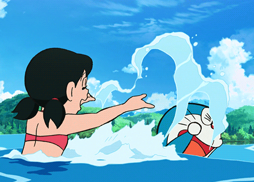
Nobita Nobi
"You really haven't changed at all. I worry about you. You need someone to look after you. Yeah... all right. The answer to your question is... yes."
— Shizuka accepting the proposal of Nobita., Stand by Me Doraemon
Shizuka loves Nobita more than any of her friends. However, she freaks out when he witnesses her taking a bath even though it's unintentional and she gets angry with him when he behaves in an unacceptable manner. Despite all of this she usually makes up with him. As seen in many episodes she really cares about him and helps him when he gets into a rough situation like being bullied by Gian and Suneo, getting hurt by falling down or by other means. She also helps him with his studies (sometimes she refuses to because Nobita would end up cheating) and invites him over to her house to try the cakes and cookies she makes. Despite him not having many talents, and messing up a lot, Shizuka admires and likes his kind heart and his ability to understand people's feelings that she even kisses him on the cheek or hugs him. She will eventually marry him in the future and have a child named Nobisuke Nobi, thanks to Doraemon's interference. Sometimes, she has shown signs of having a crush on him.
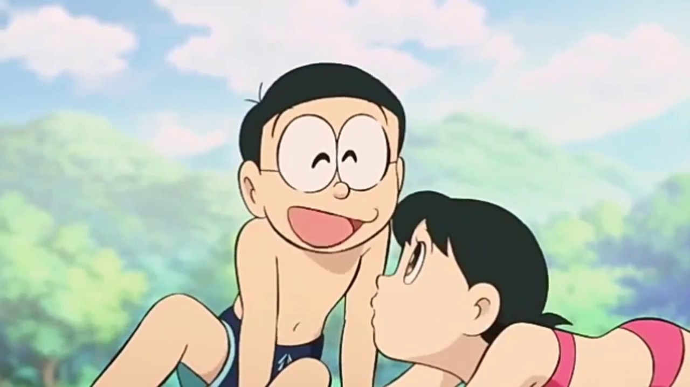
Takeshi Gouda
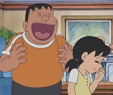
Shizuka and Gian are friends, but Shizuka gets worried when Gian forcefully invites her to his music concerts along with her other friends. In one episode, she misunderstood and thought Nobita had beaten up Gian, and she was very concerned for him and angry at Nobita. Bully or not, this showed that Shizuka still cares about him.
Suneo Honekawa
"Ah! Shizuka-chan is such a good cook!"
— Suneo commenting on Shizuka's good food.
Suneo and Shizuka are good friends. He invites Shizuka, Nobita, Gian, and sometimes Doraemon to his house and tries to ask them to come with him at trip (in which Nobita rarely gets a chance to come with them). Shizuka also apparently admires Suneo's drawing talent, as shown in some episodes. Although sometimes Shizuka can get annoyed with Suneo's selfishness and arrogance towards others, especially Nobita. When Suneo purposely excluded Nobita to one of his luxurious trips just to destroy Nobita's good mood, Shizuka threatened to reject his invitation if Nobita cannot come. Shizuka also appears a lot of Suneo's dreams, where he rescues her from danger or having a romantic date as tall and more attractive characters. In one episode, while Nobita imitates her voice saying, "Cookies are ready," resulting Suneo knowing that he has called Nobita.
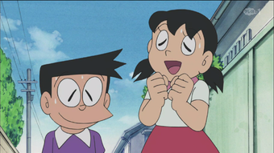
Hidetoshi Dekisugi
Dekisugi is a very good friend of Shizuka's. He is known to help Shizuka in her studies. Shizuka often forms a study group (in some terms, a study "couple") with Dekisugi when she has problems with her homework. She occasionally invites Dekisugi as well as Nobita over to her house to taste her homemade baked desserts. She also goes with him to the library, sometimes. However, she never calls him by his first name like most of the other characters. It has known that Dekisugi has confessed to her, Shizuka refused since he was too "perfect" (unlike Nobita) and can manage without her.
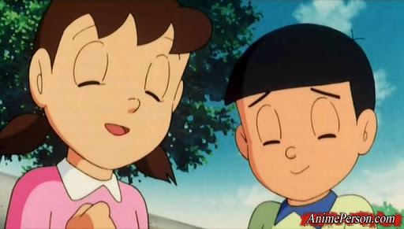
Shizuka's mother
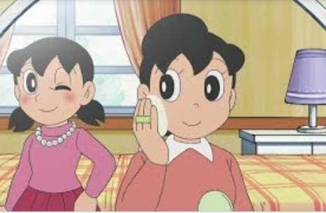
Shizuka has an OK relationship with her mother, except when she knows she's screwed up. She cares about her mother very much. For example, in "Even Though It's Inside the Stomach Acid," Shizuka is sad she swallowed her mother's rare opal as it was a very cherished item to her.
Gallery
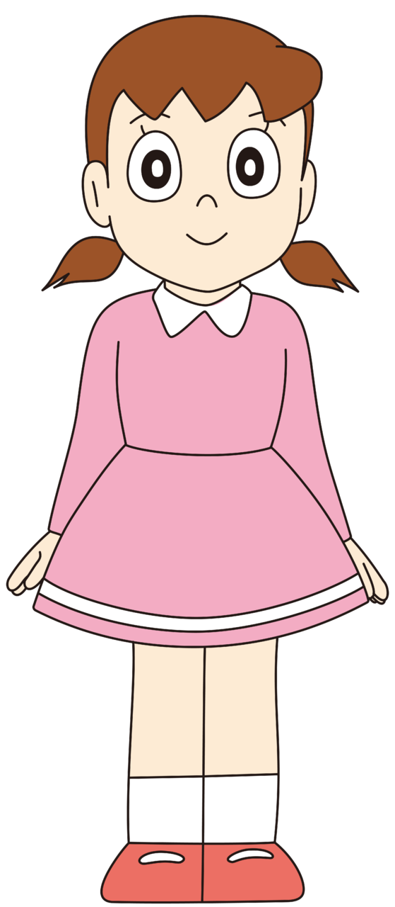
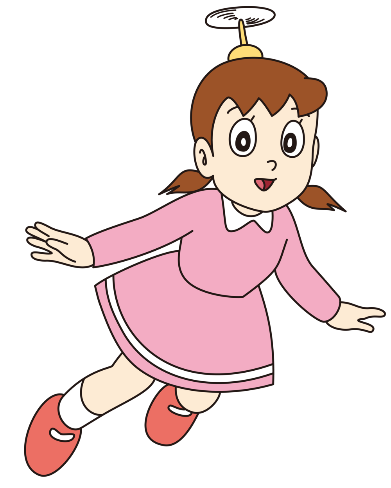
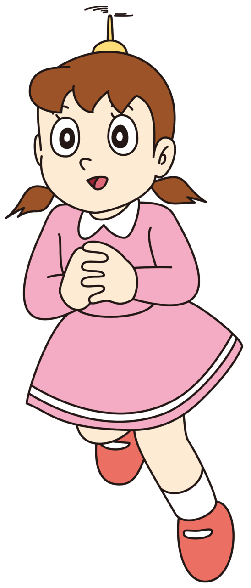
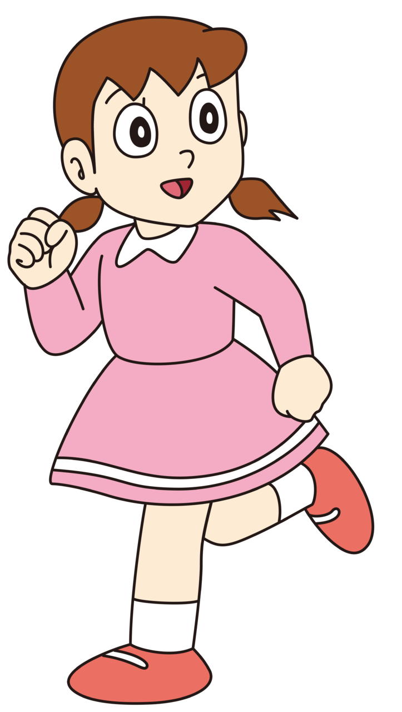
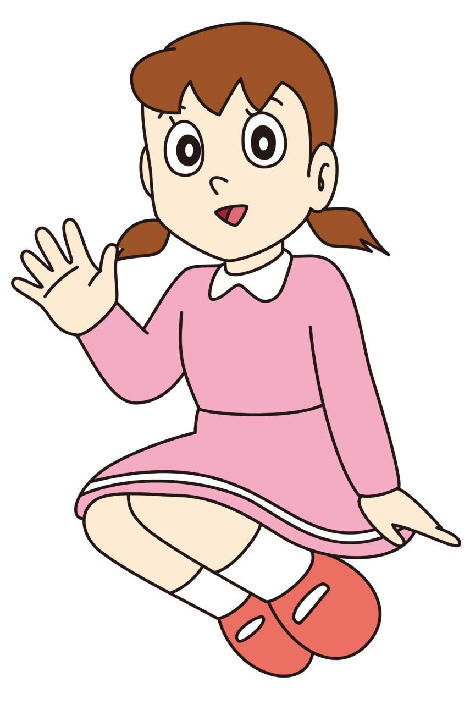
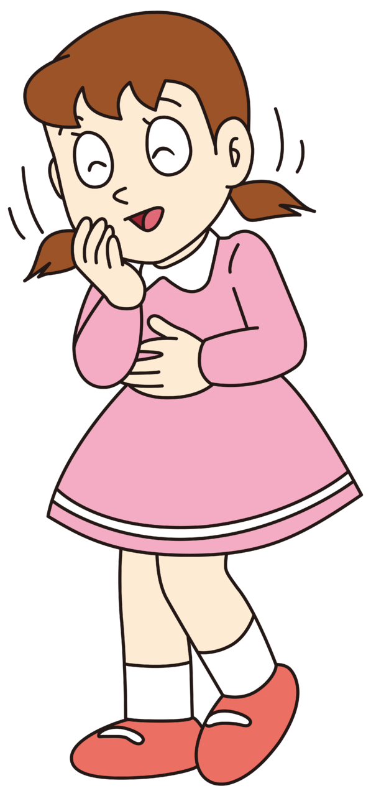